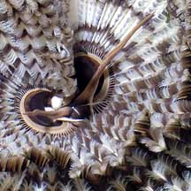
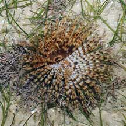
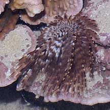
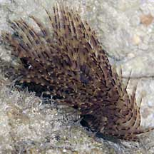
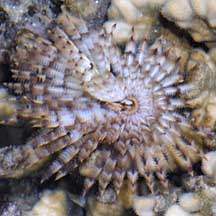
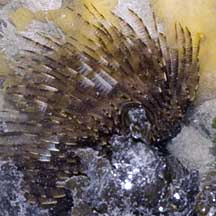

|
|
| worms text index | photo index |
| Banded
fanworm awaiting identification* Family Sabellidae updated Oct 2016 Where seen? This worm with large feathery tentacles is often seen in living hard corals, as well as dead coral rubble, on many of our shores. Features: Fan 6-8cm in diameter. The fan is banded white and brown. Usually found alone, rarely a few next to each other. Like other fanworms, it is shy and rapidly retracts into its leathery tube at the slightest sign of danger. |
 Chek Jawa, Jun 06 |
 |
|
 Growing among seagrasses, also two-toned. Cyrene Reef, Apr 08 |
 Growing in living hard coral. Pulau Hantu, Apr 07 |
*Species are difficult to positively identify without close examination.
On this website, they are grouped by external features for convenience of display.
| Banded fanworms on Singapore shores |
On wildsingapore
flickr
|
| Other sightings on Singapore shores |

 Pulau Berkas, May 10 |
 Terumbu Salu, Jan 10 |
 Pulau Salu, Jun 10 |
 Pulau Senang, Jun 10 |
| Filmed on 8 Feb
09 at Pulau Semakau fanworm 4 @ semakau 08Feb2009 from SgBeachBum on Vimeo. |